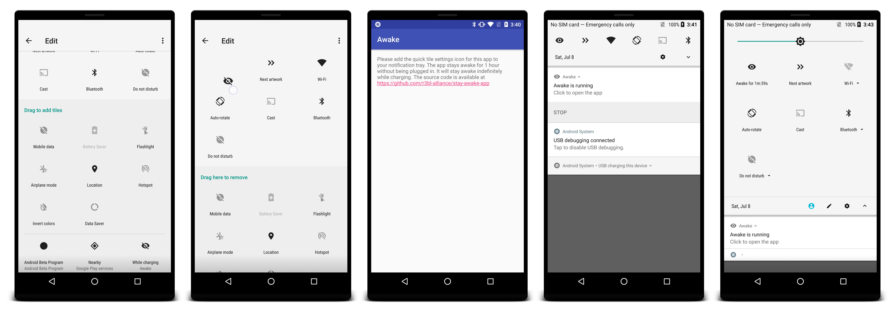

If you are a developer or designer that needs to leave your phone running for long periods of time without the screen turning off, then this is the app for you! If you've ever used Caffeine for Mac, this is a similar utility for Android N and O.
Awake is a tiny app that creates a Tile in your Quick Settings. Once you install the app, you have to customize your Quick Settings tiles.
While your phone is charging, Awake will not allow the screen to dim or go to sleep. As soon as your phone is no longer charging, Awake will turn itself off. By default, once Awake is activated, it will keep your screen awake for 1 hour, with or without charging. You can stop and start Awake at anytime, simply by clicking on its Quick Settings tile.